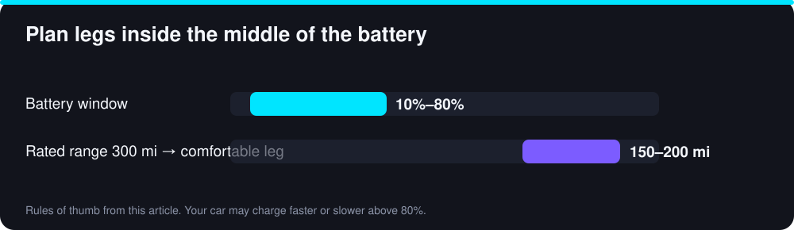

A road trip in an EV is very doable, and for many drivers it is pleasant once they learn the rhythm. The difference from a gas car is that you plan around charging stops instead of fuel stops, and the planning takes a little more thought. This guide walks through the steps.
Step 1: Know your car’s real range
Start with the car’s rated range, then subtract for highway speed, weather, luggage, roof boxes, hills and passengers. Highway driving at high speed uses more energy than mixed driving, so real range can be noticeably lower than the rating. As a rule of thumb, plan on using the middle part of the battery, roughly 10% to 80%, for each leg. If your car is rated for 300 miles, a comfortable leg is often around 150 to 200 miles. In winter, add a bigger safety margin; see our winter range guide.

Step 2: Choose your planning tools
Use your car’s built-in navigation if it plans charging stops and preconditions the battery for fast charging. Independent route planners and charger-map apps can also help by showing charger locations, power levels and recent user reports. Use at least two sources when you plan, because data on chargers is not always current. Always verify that the network works with your car and check whether you need an app or account. Our NACS vs CCS guide explains connector and adapter compatibility.
Step 3: Pick chargers wisely
Look for stations with several stalls, since one broken stall then does not ruin your stop. Prefer higher-power chargers if your car can use them, because a charger that is faster than your car’s limit does not help, while a slow one wastes time. Choose stops with amenities such as restrooms, food and shade, because a 20 to 30 minute stop is easier when there is something to do. Note the exact location and check recent reviews or check-ins for reliability. Keep a backup charger in range in case your first choice is full or broken.
Step 4: Estimate stop times
How long a stop takes depends on the battery size, the starting level, the charger’s power and the car’s charging curve. Charging is fastest at a low state of charge and slows a lot above about 80%. That is why short stops to 80% often beat waiting for a full battery. Try our charging time calculator to estimate the time for your car and charger power. Many drivers add up around 20 to 40 minutes per fast-charging stop, but your car may differ.
Step 5: Prepare before you leave
Charge at home to a level that suits your plan, often 90% or more for a long first leg. Check tire pressure, pack lightly and avoid roof boxes when possible since they increase drag. Update the car’s software, and precondition the cabin and battery while plugged in. Carry the charging cable and any adapters you need. Set up the charging apps and payment methods in advance, because searching for a login at a station is frustrating. Save offline maps in case coverage is poor.
Step 6: Drive efficiently
Keep speed reasonable because energy use rises quickly at higher speeds. Use adaptive cruise control to stay steady, use regenerative braking smoothly in traffic and avoid unnecessary hard acceleration. Use seat heaters in cold weather rather than heating the whole cabin. Keep an eye on the projected arrival percentage and adjust your speed if you are falling short.
Step 7: Have a backup plan
Assume something will go wrong occasionally: a broken charger, a queue or a change in weather. Arrive at each charger with at least 10% to 15% left, and know where the next one is. If you are very short, slowing down to 55 or 60 mph can add range. In remote areas, check the distance between chargers before you commit to a route, and consider a slower but better-supported route. Carry roadside assistance details, including who can tow an EV, since many EVs need to be flat-bed towed.
Cold weather and towing
Cold reduces range and slows charging, so allow more time and a bigger buffer. Towing a trailer can cut range dramatically, so check your car’s towing rating and plan shorter legs with more stops. Some fast chargers have narrow bays that are not suited to trailers.
Cost of charging on the road
Public fast charging usually costs more per kWh than home charging, sometimes by a large margin, and prices vary by network, location and time of day. For a long trip you might spend a similar amount to gas, or more, so use our EV savings calculator to compare, and remember that most of the year you will charge at home.
Bottom line
A good EV road trip comes down to a realistic range estimate, reliable chargers, short efficient stops and a backup plan. Do the planning once and the trip becomes routine. Enjoy the drive.
Sources and further reading
Figures marked as illustrative are worked examples built from the stated assumptions, not measured averages. Prices, incentives and specifications change, so confirm current details with these primary sources before you decide.
- Alternative Fuels Data Center: Electric vehicles (US DOE)
- Your vehicle owner’s manual: service intervals, tire pressures and battery warranty terms
Frequently Asked Questions
It depends on your battery size and speed. Many drivers plan a stop every 150–250 miles and charge from a low level to about 80%, where charging is fastest.
Yes. Charging usually slows down sharply above about 80%, so short stops to 80% are often quicker overall than waiting for 100%.
Plan a backup. Choose routes with more than one charger option and keep enough range to reach the next one.
Bilal Ahmad Alvi
CEO, FutureAutoLab
Written and reviewed by Bilal Ahmad Alvi, CEO of FutureAutoLab, following our editorial policy. Spot an error? Tell us and we will correct it.